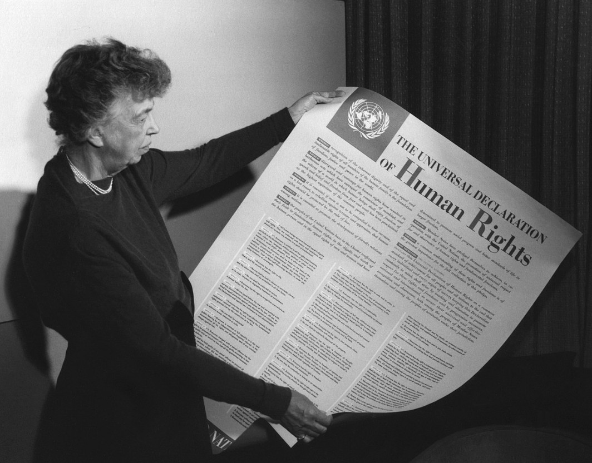

July 6th 2020, 11:15:45 pm EDT

Listen
Of all the filthy creatures from The Baltic Sea to Lake Michigan,
there is but one I miss and always rejoice to see again.
Never, have I met a creature more Awful and Cheerful than the Ring-billed Gull,
and not a single moment we spent together was any dull.
The most awful gang, lives over by the Ludington State Park,
they show up in the morning, and do not leave until dark.
They are the hungriest, and the filthiest, and the most lovable bunch,
they live to entertain themselves and steal people's lunch.
If there is one thing that needs to be said,
it is that they want to steal your food and really hate being fed.
Once, I have seen them gang up on a fool holding up a chunk of bread,
they all swooped down squeaking, and I worried they'd peck him dead.
Though in the end he was probably fine,
as I saw him later in the day studying the "DO NOT FEED SEAGULS" sign.
But as long as you let them steal your food,
they will keep you company, and all will be good.
I also like those rare Seasoned Parking-lot Pirates that show up in Spring,
they can fly to any sea or ocean, but they pick a parking-lot; and that's their thing.
They always seem like they up to something no good,
probably looking to deliver one of their sick gifts on someones hood.
But, I always feel sad when they fly away for warmer climes,
they always remind me of strange wilderness adventures and good times.
July 5th 2020, 10:24:23 pm EDT

Listen
One late afternoon I hopped on my bicycle to ride the trail,
and returned with an interesting tale.
For right where 275 and Michigan meet,
I found a little bicycle path that's really neat.
It is a huge park that branches out to two more little parks,
though they are behind peoples houses and pack a lot of dog barks.
All combined together they make a sweet little quest,
but make sure to bring plenty of water and rest.
The main path has little river bridges and lots of really neat sights,
but be really careful about ticks and mosquitoes bites.
And that northern stretch under the power line, is a sight to see,
it is just a barren bumpy grassland without a single tree.
If you keep going north on Haggerty you'll reach Ford,
and then you can bicycle back to 275 and get back on board.
But I think the woodland trail is the best because there is a lot of shade,
I imagine that's why it was made.
July 4th 2020, 11:42:09 pm EDT

Listen
When you sense that fear is near,
begin thinking about all the things you hold dear.
Think about how far you have already grown,
how much of what you love used to be scary or unknown.
And do not let anyone try to control you with fear,
they are weak and their mind is already broken and unclear.
Above all, know the weakness of fear,
all the things in your soul are far more real.
But do not just close your eyes and let it pass,
turn inward to remember your beauty, strength and class.
Let each time you get scared,
mark a day where you contemplate.
Think about all the little wisdoms you love,
and how much more you learned by standing up when push came to shove.
July 3rd 2020, 10:05:14 pm EDT

Listen
My Friends, it is very important not to think in terms of Others running the world,
whoever holds the power now, will be too old in a handful or years.
The world is yours, but it is nowhere near ready,
it needs great ideas, a lot of work, and it comes with many challenges.
The world you have been born into is not a static masterpiece,
but rather, it is constantly hoping for you to help it grow.
You are the Hope and the Dream of past generations,
it is your responsibility to grow all the way up and continue and improve the work of Great Beings.
We Grow,
by reaching out for Knowledge and Wisdom.
This also means that when we are young, we are yet to gain the necessary Knowledge and Wisdom,
The content of character required for the correct decision making that will do justice to our elder selves.
This means we need to take time to prepare ourselves for Life,
we have to make careful observations, and carefully capture all the worthy wisdom.
We have to recognize that when lacking life experience,
we are other than we should be.
There is a solution practiced by all the world's greatest minds,
it is the unrelenting pursuit of knowledge and wisdom.
For thousands of years it has been proven method,
to help us become who we need to be to do our elder selves justice.
We have no choice but to expand our minds with Knowledge,
and enlarge our worlds with Love of Wisdom.
The World Grows,
by means of informed decision-making.
Mislead or Uninformed decision-making is a Human Problem,
and all Human Problems, have Human Solutions.
We have connected all the nations with internet,
we have created the Universal Declaration of Human Rights.
We have witnessed the creation of European Union,
countries that speak different languages.
All the world accepted standardized schooling,
as a standard that we all follow.
We have come a long way,
towards Wisdom and Peace.
Time has come to make better use of these amazing advancements,
and to hasten our pace of development as One Human Family.
We face common problems that require an Informed and United World,
we have made many mistakes in the past 100 years, and we have learned much.
We can no longer see ourselves as invisible parts of our little neighborhoods,
we must now rise to the challenges of becoming a Citizen of The World.
We must grow beyond the need for our own Knowledge and Wisdom,
onward to making Meaningful and Lasting Contributions towards helping the world become more mature.
We can no longer serve, as we are not heartless and soulless cogs in a blind machine,
we must now rise to question, judge, evaluate, challenge and fearlessly stand for wisdom.
In all of Human History we never lost sight of Family, Peace, Wisdom, and Love,
not for a day, not for a moment.
Every day of human history pushed to become better than the previous,
and any fractures that occurred have had the global community come together in hopes of repairs.
Let us hasten our pace with an aim that none suffer for any reason,
be it hate, punishment, arrogance or ignorance.
Where we cannot fix something, let us use the power of time,
and either prevent new fractures before they begin,
of establish benefits for those born after a certain year in the future.
Let us never leave a chain-link unlined,
there is not to be a courtroom without a meaningful force of prevention and rehabilitation on each side.
There is not to be a war,
where it could have been prevented with education, knowledge and wisdom.
Let us make sure that all generations from now on, know with certainty and understanding,
that their first step in life - and the true rite of passage - is the acquisition of wisdom,
and capacity of decision-making worthy of their elder selves.
Above all, we must remind the children with Knowledge and Science,
that they are a Child of The Universe first.
And with History,
that to them belongs the future.
That they are to reject the status quo,
because what was well enough for the previous generation,
now needs improvement to do the current one justice.
(Pictured Eleanor Roosevelt with the English language version of the Universal Declaration of Human Rights.)
July 2nd 2020, 11:27:54 pm EDT

Listen
Great Adventures need not take you far,
and ultimately, wherever you go there you are.
But still, there is something special about new places,
we see more deeply, and get in good graces.
I think the kind of adventure, that really is the best,
will make you start keeping a little journal to document your quest.
When there is time to think about all the things and little bits,
even the slightest curiosity will bring about new wits.
So fill all the journal pages, and leave it for later,
because you never know when a little journal may become something greater.
It could come as a surprise that this little adventure you took,
turned you into a Famous Writer and became your first Adventure Book!
July 1st 2020, 10:32:43 pm EDT

Listen
On the last day of the old year,
kids were granted the power to come up with a name for our newly united world...
It all stared a long time ago, it was about not repeating history's mistakes,
a newly found emphasis on not committing the sins of our grand-grand-grand-fathers.
Young people begun rejecting Jury Duty by recognizing Poverty as a mind eating virus,
when the Judge asked if anybody couldn't serve, people would rise and say "Virus of Poverty".
It meant that they were unable to take the oath, that they could not be an impartial Juror,
because they were convinced that Universal Basic Income would prevent The Defendant from committing the crime in the first place.
The Judges had their hands tied, but they loved to hear it, and it always restored their faith in the world:
"I stand against, The Disproportionate Mass Incarceration of People Made Ill by The Virus Of Poverty"
Back in 2021 schools had to go online, and that exposed their weakness for all to see,
people, and notably their future employers, lost interest in what organized education became.
There was a shift toward self-organizing education where kids kept portfolios,
of their own paths through knowledge, and at their own natural pace.
But it wast until the first paying school, that things became clear for the youngest generation,
the school replaced imaginary grades, with real money that the children would learn to reason about and use.
By rejecting the status quo, and not settling on the irrelevant minimums,
Humanity increased her pace of progress, collective intelligence, and foresight.
It took less than twenty years, to get climate under control,
it was the children of the people that grew up by questioning authority and status quo.
Weapons manufacturing, profit optimization, economic fairy tales, greed, apathy, and hate - all fell,
as the world united under the new name: Worldie McWorldface.
June 30th 2020, 11:38:48 pm EDT

Listen
When we are still learning what the world is,
we find comfort in recognizing where something starts, and where it ends.
Knowing the beginning and seeing the ending helps us feel in control,
it helps us see the journey's end, or the height of a challenge.
But all of that goes away when we begin rising,
eventually we only consider the forward motion it self.
We ignore the beginning, we abandon the ends, we ignore the steps,
and we stop measuring the distance and paying attention to the effort.
In advancing forward we learn to recognize that all things must connect,
we can only find peace in a mesh-work of common concerns and dreams upheld by all.
The roads we must travel have no limits, and it never takes long to catch up,
nobody falls behind for too long unless they practice resignation.
We need not travel far to begin seeing that the word is still very young,
that passage of wisdom between generations is a very fragile process.
Many, who are not yet mature enough for the position they have gained, may feign authority,
we have to be careful who we listen to and be mindful of the paths they have traveled.
We are the sum of all our rising, all our triumph, effort, and intent across all our ages,
how we rose, and the choices we made, and the wisdom we grew with, all adds to the sum.
That sum doesn't just outline our personality and who we are in the now,
it is the structure of our wisdom and the body of our knowledge, directed towards who we will become in the future.
A choice we make in the now, will paint a moment in our past, but also influence what is yet to come,
and all the choices added together create who we are in the future that we will eventually enter.
We must take great care of our choices, we must take care to love ourselves,
to find the calm and peace from which we can make healthy decisions that will help us grow.
Not everyone will start in a colorful city with good schools and amazing friends,
some will struggle to rise out of extremes that will never make sense.
But we must still set ourselves on that unlimited path,
and get used to the idea of no beginnings, and no ends, just that all too human forward motion.
The direction is always the same, move towards wisdom,
that is the meeting point of all human beings no matter their circumstance or culture.
We begin as children, we mature into adults, and then we must go on to become Great Beings,
all Greatness is rooted in Love of Wisdom, and the root of wisdom is found in boldly facing the challenges of life.